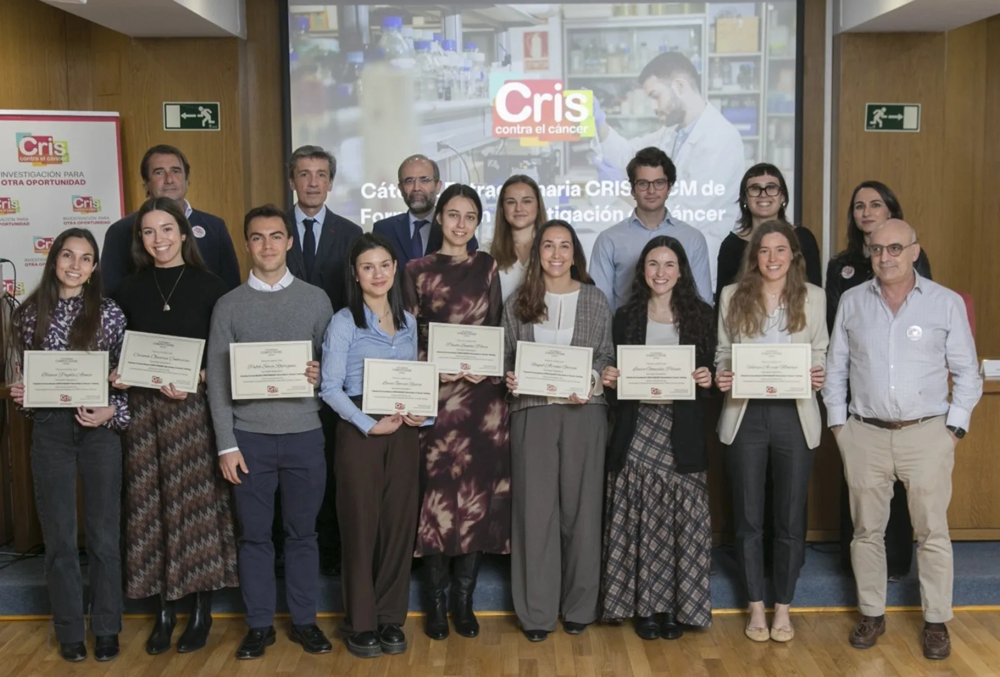

CRIS Contra el Cáncer y la UCM entregan las becas de la Cátedra CRIS-UCM para impulsar la investigación oncológica entre estudiantes de Medicina.
La Cátedra Extraordinaria CRIS-UCM impulsa el futuro de los médicos investigadores en España La investigación biomédica es una de las claves para avanzar en la lucha contra el cáncer y mejorar los resultados para los pacientes. En este contexto, la Fundación CRIS Contra el Cáncer y la Universidad Complutense de Madrid (UCM) han celebrado la entrega de la IV edición de las Becas de la Cátedra Extraordinaria CRIS-UCM, una iniciativa destinada a fomentar la vocación investigadora entre los estudiantes de Medicina. El acto de entrega de las becas se ha celebrado en la Facultad de Medicina de la Universidad Complutense de Madrid, con la participación de representantes académicos y científicos que han destacado la importancia de impulsar el talento joven en el ámbito de la investigación oncológica.
Apostar por el médico investigador para transformar la atención oncológica Uno de los principales objetivos de esta iniciativa es reforzar la figura del médico investigador, un perfil clave para trasladar los avances científicos a la práctica clínica y mejorar el abordaje del cáncer. El doctor Joaquín Martínez, director de la Cátedra CRIS, jefe de Hematología del Hospital Universitario 12 de Octubre y director científico de CRIS Contra el Cáncer, ha subrayado la necesidad de avanzar hacia un modelo que permita a los médicos desarrollar su carrera investigadora sin renunciar a su actividad asistencial. Según ha señalado, contar con un marco regulado y estable para el médico investigador es esencial para impulsar la innovación, mejorar la calidad asistencial y garantizar mejores resultados para los pacientes con cáncer.
El talento joven como motor de la investigación Las Becas de la Cátedra Extraordinaria CRIS-UCM reflejan la apuesta de CRIS Contra el Cáncer por apoyar el talento desde las primeras etapas de la formación médica. Los estudiantes seleccionados en esta cuarta edición son: • Serena Torres Martínez • Pablo Soria Rodríguez • Inés Martínez Baena • Raquel Arranz García • Blanca Pagola Alonso • Paula Santos Pérez • Laura González Pernía • Valeria Arrate Montoya • Pablo María Montejo • Carmen Olivares Contreras • Lucía García Rivera Los becados se incorporarán a equipos científicos de primer nivel, donde podrán participar en proyectos de investigación innovadores y adquirir competencias clave para su futura trayectoria como médicos investigadores.
Liderazgo femenino en las nuevas generaciones de médicos investigadores Uno de los aspectos destacados de esta edición es la presencia mayoritaria de mujeres entre los estudiantes seleccionados, un dato que refleja el creciente liderazgo del talento femenino en las nuevas promociones de profesionales de la Medicina. Desde CRIS Contra el Cáncer se subraya que incorporar la investigación desde las primeras etapas de la formación médica es fundamental para construir una medicina más innovadora, resolutiva y orientada al paciente. Con esta iniciativa, CRIS Contra el Cáncer y la Universidad Complutense de Madrid consolidan un puente sólido entre universidad, investigación y práctica clínica, contribuyendo a garantizar el relevo científico y el futuro de la investigación biomédica en España.
CRIS y la UCM impulsan el futuro del médico investigador CRIS Contra el Cáncer y la UCM entregan las becas de la Cátedra CRIS-UCM para impulsar la investigación oncológica entre estudiantes de Medicina.
Contenido elaborado por GEPAC · Becas de la Cátedra Extraordinaria CRIS-UCM gepac.es